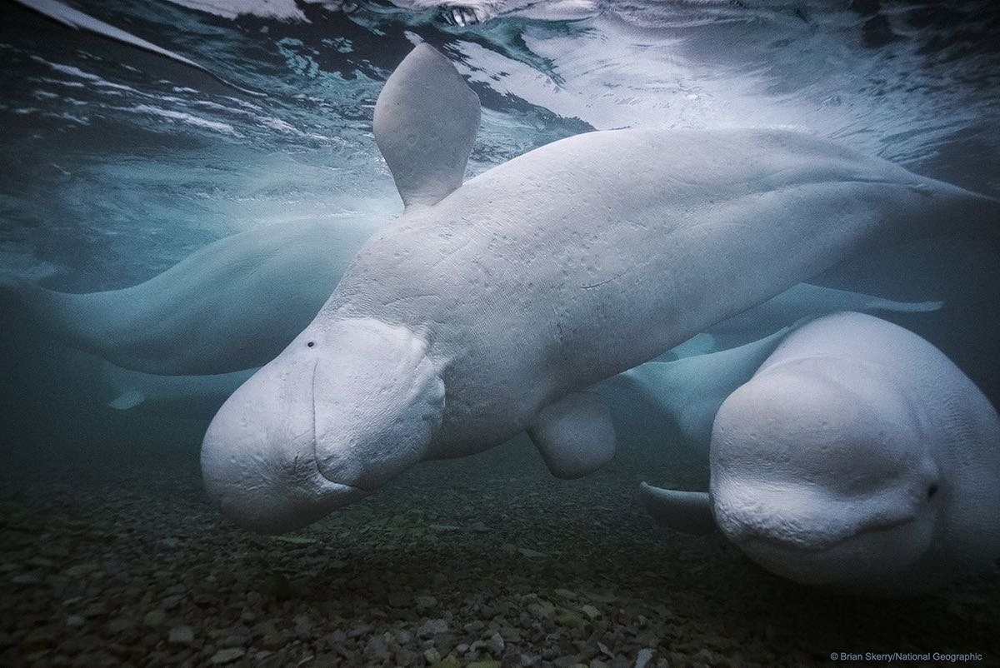
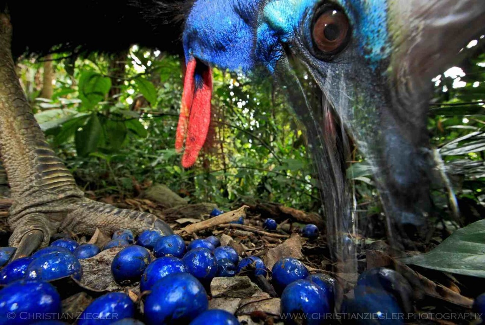
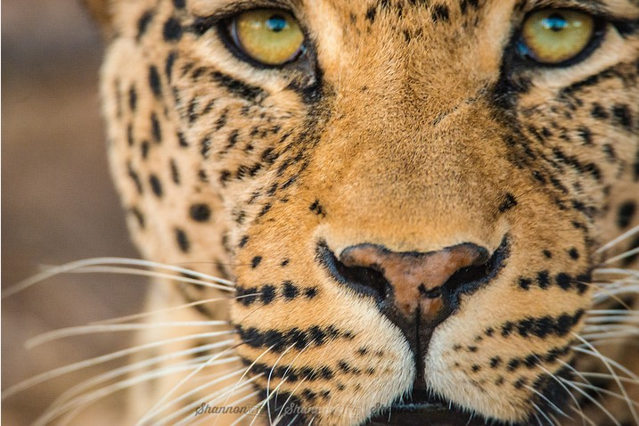

Wildlife Photographs
Wild Animals and their natural habitat have been an item of fascination for countless photographers. In practice, wildlife photography is not for the faint of heart. It comes with unique challenges and real and physical dangers, particularly demanding equipment. Still, there is a remarkable list of wildlife photographers who have persevered and thrived.
-

Brian Skerry
He created and produced ‘Secrets of the Whales,’ a multi-platform project that included a cover story in National Geographic magazine, a book, and a 4-part documentary film series, streaming on Disney+. The series won the 2021 Primetime Emmy Award for Outstanding Documentary. Skerry is also actively involved in wildlife conservation efforts and is a founding member of the International League of Conservation Photographers.
-

Christian Ziegler
Christian Ziegler has amassed an incredible portfolio. His prime focus lies on displaying the biodiversity and natural history of rainforests in Central and South America. Christian works worldwide to raise awareness of endangered species and ecosystems, mainly in the tropics. Drawing from his experience as a trained tropical ecologist, Ziegler approaches his subject matter with great care and scientific understanding.
-

Shannon Wild
Shannon Wild has worked as a wildlife photographer and cinematographer on every continent. Her stunning images of the natural world, which include emotional photos of cheetah and tiger cubs, have won Wild many awards. Her travel and wildlife photography showcases radiant colors, evocative emotions, and excellent composition with regard to her animal subjects.
Marsel van Oosten
Marsel van Oosten hails from the Netherlands. He has received wide praise for his simplistic, minimalist showcases of nature at its most bare. Characterizing himself as both a nature and wildlife photographer, van Oosten frequently breaks established genre barriers in his quest to spread the cause of environmental conservation.
Melissa Groo
Melissa Groo is a member of the International League of Conservation Photographers, and she takes her work and its ethics very seriously. She tirelessly works to educate others about the magic and the fragility of Earth’s various wildlife species. And throughout her career, she has taken many photos of endangered species to raise awareness from the public.
Amy Gulick
A founding fellow of the International League of Conservation Photographers, Amy Gulick excels in her wildlife photography and her writing. Her most recent book, The Salmon Way, beautifully showcases her capacity to blend award-winning photography with witty, engaging, and educational writing. In all her published media, she informs and teaches about environmental needs and the conservationist cause to a broad audience.